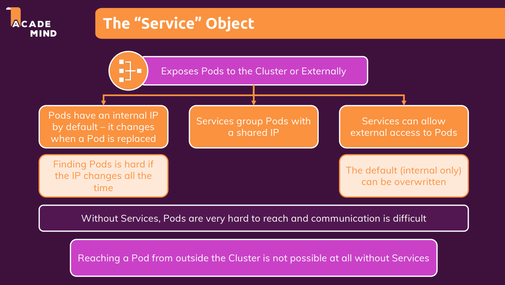
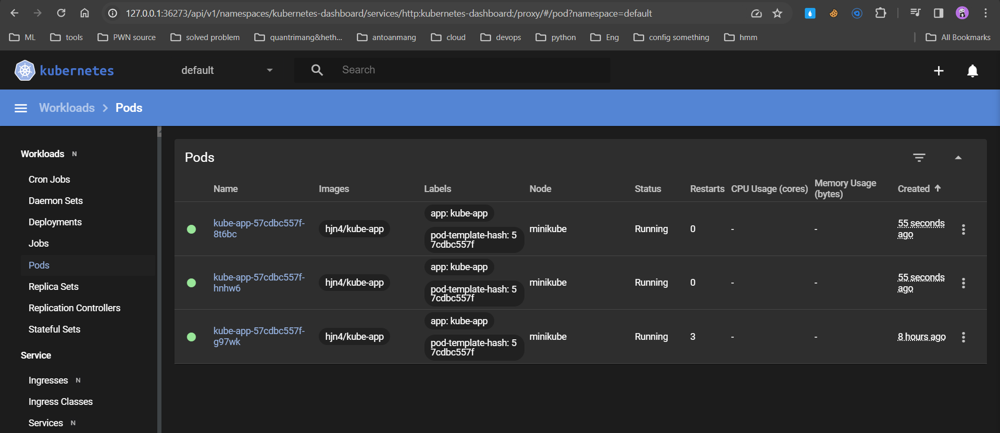
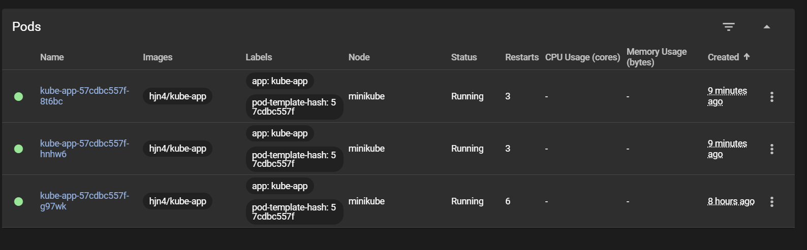

Khái niệm cơ bản
Cluster Architecture

Cluster gồm 2 thành phần:
- Control Plane: Có nhiệm vụ điều phối toàn bộ hoạt động của cluster
- Data Plane:
- Giúp triển khai service
- Gồm nhiều worker node

Control Plane
-
kube-apiserver:: Cho phép quản lý API trong cluster, khi client (CLI interface), Agents, gọi đến cluster, cần lấy thông tin trong cluster thì sẽ gọi đến API Server này. API Server sẽ tiến hành xác thực, phân quyền. Mọi thứ đều phải tương tác qua API Server
-
kube-controller-manager: Bất kì một controler nào trong cluster k8s đều làm nhiệm vụ monitor một đối tượng nào đó rồi đưa ra hành động tương ứng. Example: quản lý replicaset
-
Scheduler: Khi mà ta muốn chạy 1 service, thì scheduler sẽ tiến hành tìm các Node hợp lệ (thỏa mản các ràng buộc và có sẵn các tài nguyên cần thiết). Scheduler sẽ rank các valid nodes rồi gán Pod với node hợp lệ
-
etcd: Như là 1 database chứa toàn bộ data của cluster (objects, resources,...) phục vụ cho mục đích truy cập và tra cứu
-
cloud-controller-manager(optional): Khi mà ta tự tạo riêng 1 cái cluster k8s nhưng lại muốn sử dụng các tài nguyên như (EC2, S3, ...) trên cloud nói chung, AWS nói riêng thì ta cần đến CCM để có thể tương tác với các service của cloud

Data Plane
Gồm nhiều woker node, trong các woker node thì có 2 thành phần chính:
- Kubelet: Như là 1 Agent có trách nhiệm checkin các resource chạy trên woker node(Pod,...) cập nhật thông tin lên API Server, nhận lệnh từ API Server và triển khai trên woker node. Đảm bảo các containers trên các Pod chạy ổn định
- Kube-Proxy: Tạo ra các rule để instance, pod connect với nhau
- Container Runtime: Container runtime là một phần mềm chịu trách nhiệm cho việc quản lý và chạy các container. Nó là một thành phần cụ thể của hệ thống có nhiệm vụ thực hiện các chức năng như tạo, khởi động, dừng và xóa container. Một số container runtime phổ biến trong cộng đồng Kubernetes bao gồm Docker, containerd, rkt, và CRI-O.
- Container Runtime Interface: CRI là một giao diện chuẩn để tương tác giữa Kubernetes và các container runtime. Nó giúp tách biệt logic quản lý container của Kubernetes với container runtime cụ thể, cho phép linh hoạt trong việc thay đổi hoặc sử dụng nhiều container runtime khác nhau.
YAML
- Example Json:
data = {
"id": "AWcvsjx864kVeDHDi2gB",
"timestamp": 1542693469197,
"description": "This network device leaf2.abc.inc is unreachable from controller. The device role is ACCESS.",
"actualServiceId": "10.10.20.82",
"assignedTo": "",
"enrichmentInfo": {
"issueDetails": {
"issue": [
{
"issueId": "AWcvsjx864kVeDHDi2gB",
"issuePriority": "",
"issueSummary": "Network Device 10.10.20.82 Is Unreachable From Controller",
"issueTimestamp": 1542693469197,
"suggestedActions": [
{
"message": "From the controller, verify whether the last hop is reachable.",
"steps": []
},
{
"message": "Verify access to the device.",
"steps": []
}
],
"impactedHosts": [
{
"hostName": "DUT",
"failedAttempts": 3,
"location": {
"siteId": "SanJose",
"apsImpacted": []
},
"timestamp": 1542693469197
}
]
}
]
},
"connectedDevice": [
{
"deviceDetails": {
"inventoryStatusDetail": "<status><general code=\"SNMP_TIMEOUT\"/></status>",
"lastUpdateTime": 1542693255158,
"errorDescription": "SNMP timeouts are occurring with this device. Either the SNMP credentials are not correctly provided to controller or the device is responding slow and snmp timeout is low. If its a timeout issue, controller will attempt to progressively adjust the timeout in subsequent collection cycles to get device to managed state. User can also run discovery again only for this device using the discovery feature after adjusting the timeout and snmp credentials as required. Or user can update the timeout and snmp credentials as required using update credentials.",
"tagCount": "0",
"lastUpdated": "2018-11-20 05:54:15",
"id": "a7633ae5-d3c9-4aea-837d-c3ad5b19c802",
"neighborTopology": [
{
"errorCode": 5000,
"message": "An internal has error occurred while processing this request.",
}
],
"cisco360view": "https://10.10.20.22/dna/assurance/home#networkDevice/a7633ae5-d3c9-4aea-837d-c3ad5b19c802"
}
}
]
}
}
- Convert from json to yaml
JSON
{
Servers: [
{
name: Server1
owner: John
created: 2021
status: Active
},
{
name: Server2
owner: Huy
created: 2024
status: Active
}
]
}
YAML
Servers:
- name: Server1
owner: John
created: 2021
status: Active
- name: Server2
owner: Huy
created: 2024
status: Active
- YAML thường được sử dụng làm ngôn ngữ định nghĩa cấu hình
- Data Structure:

- YAML Ain't Markup Language (YAML) là tập cha của JSON, được thiết kế để dễ đọc hơn.
- Vì là tập cha của JSON nên các bộ phân tích YAML có thể phân tích các tệp JSON (nhưng ngược lại thì không).
- Do vậy, YAML tốt hơn JSON ở một số tác vụ, bao gồm việc nhúng trực tiếp mã JSON (có chứa dấu ngoặc kép) trong các file YAML.
- YAML sử dụng thụt lề để xác định phân cấp trong tệp.
- Maps và danh sách (list) cũng có thể được biểu diễn khá tương tự như trong JavaScript hoặc Python, dưới dạng gọi là “flow syntax” – cú pháp luồng.
person:
name: John
age: 30
city: New York
person: {name: John, age: 30, city: New York}
fruits:
- apple
- orange
- banana
fruits: [apple, orange, banana]
people:
- name: John
age: 30
city: New York
- name: Jane
age: 25
city: London
people:
- {name: John, age: 30, city: New York}
- {name: Jane, age: 25, city: London}
POD
- Là một đối tượng nhỏ nhất được tạo ra bởi k8s
- Dùng để đóng gói các Containers vào bên trong
- Là một instance của application
- Khi Pod đang running nó là thực thể không thể thay đổi (thêm, xóa, sửa)
- Scale workload => tăng Pod => tăng Host

- Multiple Container in Pod

- Sidecar Container: container running song song với container application
- Init Container: container running trước container application
- Chỉ nên chạy 1 container trong 1 pod
Install
Install kubectl on ubuntu
curl -LO "https://dl.k8s.io/release/$(curl -L -s https://dl.k8s.io/release/stable.txt)/bin/linux/amd64/kubectl"
sudo install -o root -g root -m 0755 kubectl /usr/local/bin/kubectl
kubectl version --client
Install MiniKube
sudo apt update -y
sudo apt upgrade -y
sudo reboot
sudo apt install -y curl wget apt-transport-https
curl -LO https://storage.googleapis.com/minikube/releases/latest/minikube-linux-amd64
sudo install minikube-linux-amd64 /usr/local/bin/minikube
minikube version
Deploy
- Cần start minikube:
minikube start --driver=docker
minikube status
- Khi ta create 1 object, kubectl sẽ tự động gửi câu lệnh này cho virtual host, virtual host nó đi tìm image này nó sẽ tìm trên dockerhub, do đó ta cần push image lên dockerhub
kubectl create deployment first-app --image=kube-test
Kiểm tra cho thấy create object không thành công:
➜ kub-action-01-starting-setup ⚡  20.8.0 07:29:45
▶ kubectl get deployment
NAME READY UP-TO-DATE AVAILABLE AGE
first-app 0/1 1 0 53s
➜ kub-action-01-starting-setup ⚡  20.8.0 07:29:55
▶ kubectl get pod
NAME READY STATUS RESTARTS AGE
first-app-f975696fc-fhzqh 0/1 ImagePullBackOff 0 60s
# Do là chưa Ready nên cần push image lên
➜ kub-action-01-starting-setup ⚡  20.8.0 07:30:02
▶ kubectl delete deployment first-app
deployment.apps "first-app" deleted
minikube dashboard # for monitor

How kubectl work?

The "Service" Object

-
"Service" Object có thể giúp các pod communicate với nhau thông qua name, giúp các service group pods có thể có 1 đại chỉ IP không đổi dù các pods bên trong có thay đổi
-
Tạo service mới, nhằm tạo cách có thể truy cập đến một deployment cụ thể:
kubectl expose deployment kube-app --type=LoadBalancer --port=8080
- X: ClusterIP, LoadBalancer, NodePort, ...
- LoadBalancer yêu cầu được tạo trước đó
- --port=8080: Mở cổng 8080 trên dịch vụ. Các yêu cầu được chuyển đến cổng này sẽ được chuyển tiếp đến các Pod thuộc Deployment "first-app" trên cổng mà Deployment đang lắng nghe (trong trường hợp này, cổng 8080).
- ClusterIP: Dịch vụ mặc định khi không chỉ định --type nào. Nó tạo ra một địa chỉ IP nội bộ trong cụm Kubernetes và chỉ có thể truy cập từ bên trong cụm. Đây là loại dịch vụ nhanh và phổ biến nhất.
- ExternalName: Liên kết dịch vụ với một tên DNS bên ngoài. Không tạo ra địa chỉ IP nội bộ và không có load balancing. Thường được sử dụng để kết nối với các dịch vụ bên ngoài cụm Kubernetes
- LoadBalancer: Tạo ra một LoadBalancer và gán một địa chỉ IP công cộng cho dịch vụ. Các yêu cầu được chuyển tiếp từ LoadBalancer đến các Pod thuộc dịch vụ.
- NodePort:
- Khi bạn tạo một dịch vụ NodePort và kết nối nó với một Deployment, tất cả các Pod thuộc Deployment đó sẽ chia sẻ cùng một cổng NodePort trên mỗi node. Mỗi Pod không có cổng riêng lẻ được mở, và không có cách để yêu cầu từ một Pod cụ thể được chuyển tiếp đến một Pod khác trong cùng một Deployment thông qua cổng NodePort.
- Ví dụ, nếu bạn có một Deployment với nhiều Pod, và tạo một dịch vụ NodePort cho Deployment đó, cổng NodePort sẽ chuyển tiếp yêu cầu đến bất kỳ Pod nào thuộc Deployment đó. Nó không sẽ chuyển tiếp yêu cầu từ một Pod cụ thể đến Pod khác cụ thể trong Deployment.
➜ kub-action-01-starting-setup ⚡  20.8.0 14:33:21
▶ kubectl expose deployment kube-app --type=LoadBalancer --port=8080
service/kube-app exposed
➜ kub-action-01-starting-setup ⚡  20.8.0 14:33:30
▶ kubectl get service
NAME TYPE CLUSTER-IP EXTERNAL-IP PORT(S) AGE
kube-app LoadBalancer 10.102.88.140 <pending> 8080:31310/TCP 34s
kubernetes ClusterIP 10.96.0.1 <none> 443/TCP 3h4m
- ClusterIP is default
- Trong minikube thì đây là 1 virtual host do đó thì external-ip sẽ luôn pending như vậy.
➜ kub-action-01-starting-setup ⚡  20.8.0 14:34:05
▶ minikube service kube-app
|-----------|----------|-------------|---------------------------|
| NAMESPACE | NAME | TARGET PORT | URL |
|-----------|----------|-------------|---------------------------|
| default | kube-app | 8080 | http://192.168.67.2:31310 |
|-----------|----------|-------------|---------------------------|
üèÉ Starting tunnel for service kube-app.
|-----------|----------|-------------|------------------------|
| NAMESPACE | NAME | TARGET PORT | URL |
|-----------|----------|-------------|------------------------|
| default | kube-app | | http://127.0.0.1:43719 |
|-----------|----------|-------------|------------------------|
üéâ Opening service default/kube-app in default browser...
# or
➜ Application ⚡ 15:34:59
▶ minikube service kube-app --url
http://127.0.0.1:43815
❗ Because you are using a Docker driver on linux, the terminal needs to be open to run it.
- Có khả năng tự restart nếu pod bị fail, để duy trì tính ổn định của ứng dụng.
Scale
➜ ~ ⚡ 19:40:47
▶ kubectl scale deployment/kube-app --replicas=3
deployment.apps/kube-app scaled
➜ ~ ⚡ 19:40:53
▶ kubectl get pods
NAME READY STATUS RESTARTS AGE
kube-app-57cdbc557f-8t6bc 0/1 ContainerCreating 0 2s
kube-app-57cdbc557f-g97wk 1/1 Running 3 (52m ago) 8h
kube-app-57cdbc557f-hnhw6 0/1 ContainerCreating 0 2s
➜ ~ ⚡ 19:40:55
▶ kubectl get pods
NAME READY STATUS RESTARTS AGE
kube-app-57cdbc557f-8t6bc 1/1 Running 0 19s
kube-app-57cdbc557f-g97wk 1/1 Running 3 (53m ago) 8h
kube-app-57cdbc557f-hnhw6 1/1 Running 0 19s

- Do là trước đó ta add service type LoadBalancer => các pods này cũng có load

Update new version
Note: không thể update image với 1 tên khác hay là 1 cái tech khác
- Lệnh này được sử dụng để cập nhật image của container trong một Deployment trong Kubernetes. Trong trường hợp này, kube-app=/hjn4... kube-app ở đây là tên container
Note: Cần lưu ý một vấn đề là tag version phải khác version trước, bởi vì nếu giống nhau nó sẽ k download về
kubectl set image deployment/kube-app kube-app=hjn4/kube-app:v2
➜ ~ ⚡ 20:13:20
▶ kubectl set image deployment/kube-app kube-app=hjn4/kube-app:v2
deployment.apps/kube-app image updated
- Lệnh này được sử dụng để theo dõi trạng thái của quá trình triển khai (rollout) sau khi bạn đã thực hiện việc cập nhật image hoặc thay đổi khác trong một Deployment.
kubectl rollout status deployment/kube-app
➜ ~ ⚡ 20:13:56
▶ kubectl rollout status deployment/kube-app
Waiting for deployment "kube-app" rollout to finish: 1 out of 3 new replicas have been updated...
Waiting for deployment "kube-app" rollout to finish: 1 out of 3 new replicas have been updated...
Waiting for deployment "kube-app" rollout to finish: 1 out of 3 new replicas have been updated...
Waiting for deployment "kube-app" rollout to finish: 2 out of 3 new replicas have been updated...
Waiting for deployment "kube-app" rollout to finish: 2 out of 3 new replicas have been updated...
Waiting for deployment "kube-app" rollout to finish: 2 out of 3 new replicas have been updated...
Waiting for deployment "kube-app" rollout to finish: 1 old replicas are pending termination...
Waiting for deployment "kube-app" rollout to finish: 1 old replicas are pending termination...
deployment "kube-app" successfully rolled out
Rollback & history
- Chúng ta giả lập version lỗi, update image với tag không tồn tại:
➜ ~ ⚡ 20:14:10
▶ kubectl set image deployment/kube-app kube-app=hjn4/kube-app:3
deployment.apps/kube-app image updated
➜ ~ ⚡ 20:37:52
▶ kubectl rollout status deployment/kube-app
Waiting for deployment "kube-app" rollout to finish: 1 out of 3 new replicas have been updated...
Waiting for deployment "kube-app" rollout to finish: 1 out of 3 new replicas have been updated...
Waiting for deployment "kube-app" rollout to finish: 1 out of 3 new replicas have been updated...
Waiting for deployment "kube-app" rollout to finish: 1 out of 3 new replicas have been updated...
Waiting for deployment "kube-app" rollout to finish: 1 out of 3 new replicas have been updated...
Waiting for deployment "kube-app" rollout to finish: 1 out of 3 new replicas have been updated...
Waiting for deployment "kube-app" rollout to finish: 1 out of 3 new replicas have been updated...

- Hoàn tác việc triển khai version mới nhất:
kubectl rollout undo deployment/kube-app
-
Check các version update và rollback về trạng thái chỉ định trong quá khứ:
-
xem các trạng thái trước đó
kubectl rollout history deployment/kube-app
- xem chi tiết 1 cụ thể 1 trạng thái
kubectl rollout history deployment/kube-app --revision=1
➜ ~ ⚡ 20:42:27
▶ kubectl rollout history deployment/kube-app
deployment.apps/kube-app
REVISION CHANGE-CAUSE
1 <none>
3 <none>
4 <none>
➜ ~ ⚡ 20:43:26
▶ kubectl rollout history deployment/kube-app --revision=1
deployment.apps/kube-app with revision #1
Pod Template:
Labels: app=kube-app
pod-template-hash=57cdbc557f
Containers:
kube-app:
Image: hjn4/kube-app
Port: <none>
Host Port: <none>
Environment: <none>
Mounts: <none>
Volumes: <none>
- Rollback về quá khứ:
kubectl rollout undo deployment/kube-app --to-revision=1
➜ ~ ⚡ 20:44:22
▶ kubectl rollout undo deployment/kube-app --to-revision=1
deployment.apps/kube-app rolled back
Tại sao không thấy downtime trong quá trình rollback
- Rolling Update Strategy: Kubernetes sử dụng chiến lược cập nhật cuộn (Rolling Update) mặc định khi bạn thực hiện các thay đổi trong một Deployment. Điều này có nghĩa là nó sẽ tạo ra các bản sao mới của Pods, loại bỏ từng Pod cũ một cách dần dần để đảm bảo rằng ít nhất một số lượng Pods luôn hoạt động trong suốt quá trình triển khai.
- Pods Cũ Và Mới Hoạt Động Đồng Thời: Trong quá trình cuộn chảy, có một khoảng thời gian khi cả các Pods cũ và mới đều hoạt động đồng thời. Kubernetes đảm bảo rằng số lượng Pods hoạt động không bao giờ giảm xuống dưới một mức nhất định, nhờ đó giảm thiểu hoặc loại bỏ downtime.
- Health Checks: Kubernetes sử dụng các kiểm tra sức khỏe (health checks) để đảm bảo rằng mỗi Pod mới được triển khai được xem là "sẵn sàng" trước khi loại bỏ một Pod cũ. Điều này giúp đảm bảo rằng chỉ có các Pods sẵn sàng và lành mạnh được giữ lại.
- Pod Disruption Budgets: Nếu bạn đã cấu hình Pod Disruption Budget trong Deployment, Kubernetes sẽ giữ lại một số lượng Pods hoạt động tối thiểu trong quá trình triển khai hoặc quay lại phiên bản trước đó.
Delete
➜ ~ ⚡ 20:45:57
▶ kubectl delete service kube-app
service "kube-app" deleted
➜ ~ ⚡ 20:52:49
▶ kubectl delete deployment kube-app
deployment.apps "kube-app" deleted
➜ ~ ⚡ 20:53:00
▶ kubectl get deployment
No resources found in default namespace.
➜ ~ ⚡ 20:53:07
▶ kubectl get pod
NAME READY STATUS RESTARTS AGE
kube-app-57cdbc557f-99ftg 1/1 Terminating 0 7m16s
kube-app-57cdbc557f-k8fx9 1/1 Terminating 0 7m10s
kube-app-57cdbc557f-z8nl9 1/1 Terminating 0 7m13s
➜ ~ ⚡ 20:53:13
▶ kubectl get pod
No resources found in default namespace.